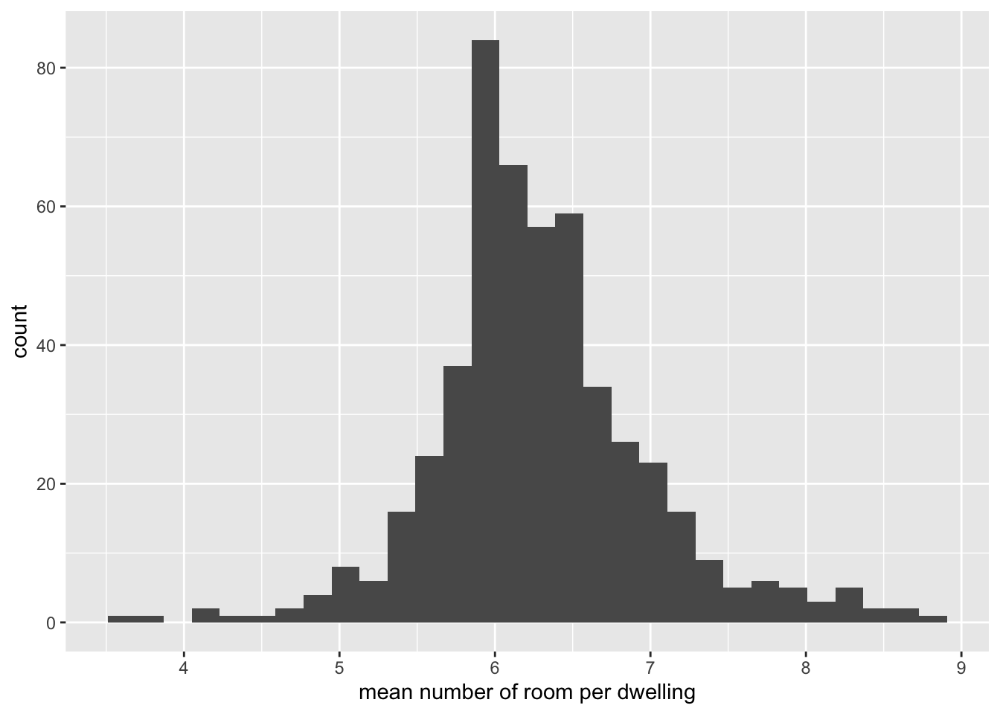
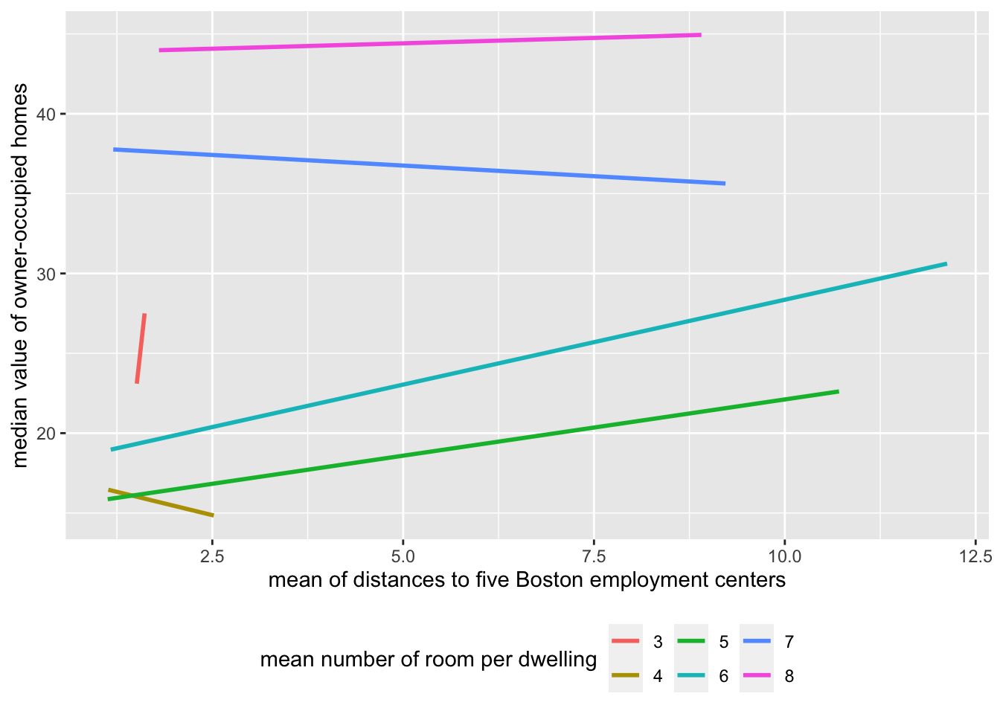

Code
library(ISLR2)
library(tidyverse)
library(tidymodels)Chun Su
February 28, 2022
Linear model is the most popular model used in various of fields, due to its simple execution and interpretation. It can be not only used to predict like all other machine learning models. but also widely used for statistical inference due to its simplicity.
Generalized Linear Model (GLM), as named indicated, is generalized from linear regression model, and extends linear model default assumptions to include outcome variables following exponential family distribution. It used link function to transform the outcome so that the transformed Y can be represented by linear combination of predictors. Due to this transformation, it makes coefficients interpretation a little confusing. In this blog, I will use four classical examples (Boston, Default, BrainCancer, and Bikeshare from ISLR2 package) to illustrate how to interpret the coefficients of GLM from tidymodels fit tidy outcome in R.
Modeling linear regression in R is simple. The following example used dis (weighted mean of distances to five Boston employment centers) as single predictor to predict medv (median value of house in $1000s) in Boston.
Call:
lm(formula = medv ~ dis, data = Boston)
Residuals:
Min 1Q Median 3Q Max
-15.016 -5.556 -1.865 2.288 30.377
Coefficients:
Estimate Std. Error t value Pr(>|t|)
(Intercept) 18.3901 0.8174 22.499 < 2e-16 ***
dis 1.0916 0.1884 5.795 1.21e-08 ***
---
Signif. codes: 0 '***' 0.001 '**' 0.01 '*' 0.05 '.' 0.1 ' ' 1
Residual standard error: 8.914 on 504 degrees of freedom
Multiple R-squared: 0.06246, Adjusted R-squared: 0.0606
F-statistic: 33.58 on 1 and 504 DF, p-value: 1.207e-08Based on coefficients summary, dis is significantly (p-value = 1.21e-08) positively correlated with medv. With 1 unit increase in term of distances to Boston employment centers, the median value of house increase $1091.6 = 1.0916 * 1000.
In multivariate linear regression, when we interpret the coefficients, there are two components taken into account - whether the variables are independent - how to interpret the interaction term
In the following example, we model the medv with dis (weighted mean of distances to five Boston employment centers), rm (average number of rooms per dwelling), crim (per capita crime rate by town) and chas (tract bounds river).
For practice purpose, I will use tidymodels to build linear model in the multivariate linear regression example.
We starts with no interactions among the predictors.
# A tibble: 5 × 5
term estimate std.error statistic p.value
<chr> <dbl> <dbl> <dbl> <dbl>
1 (Intercept) -29.1 2.57 -11.3 1.20e-26
2 dis 0.201 0.144 1.40 1.62e- 1
3 rm 8.19 0.406 20.2 9.12e-67
4 crim -0.243 0.0350 -6.94 1.19e-11
5 chas 3.98 1.10 3.63 3.10e- 4In this model, all predictors except dis show significant correlation with medv (p-value < 0.05). rm and chas are positively while crim is negatively associated with medv. - rm: when keeping all other variables the same, increase 1 room per dwelling on average results in $8,194.4 (8.1944 * 1000) increase in median house value. - chas: when keeping all other variables the same, having tracts bounds to the Charles river increase median house value $3,982.5 (3.9825 * 1000). chas is a dummy variable where = 1 if tract bounds river and =0 otherwise. Thus =0 (tract do not bound to river) is a baseline here. We will discuss more about baseline in later example. - crim: when keeping all other variables the same, 1 unit increase in per capita crime rate will result a decrease of $243.2 (-0.24318 * 1000) in median house value.
Based on common sense, usually the house is smaller when it is closer to city center. Adding interaction term between rm and dis we assumed that the number of room and the distance to business center are not independent. We are testing the hypothesis that the linear relationship between dis and medv was affected by the the rm. This affect can be linear or non-linear, can be negative or positive.
`stat_bin()` using `bins = 30`. Pick better value with `binwidth`.
Boston %>%
mutate(rm = as.integer(rm)) %>%
ggplot(aes(x=dis, y=medv, color=as.factor(rm))) +
geom_smooth(method = 'lm', se = F) +
labs(x = 'mean of distances to five Boston employment centers', y= 'median value of owner-occupied homes', color="mean number of room per dwelling") +
theme(legend.position = 'bottom')`geom_smooth()` using formula 'y ~ x'
Thus, we added interaction term between dis and rm. The thumb of rule to use interaction term is hierarchical principle, which means, if we include an interaction in a model, we should also include the main effects, even if the p-values associated with main effect coefficients are not significant. Thus we should always use * instead of : when adding the interaction term. dis*rm means dis + rm + dis:rm.
# A tibble: 6 × 5
term estimate std.error statistic p.value
<chr> <dbl> <dbl> <dbl> <dbl>
1 (Intercept) -5.03 4.70 -1.07 2.85e- 1
2 dis -7.43 1.27 -5.84 9.30e- 9
3 rm 4.38 0.744 5.89 7.11e- 9
4 crim -0.270 0.0341 -7.90 1.80e-14
5 chas 3.99 1.06 3.77 1.83e- 4
6 `dis:rm` 1.20 0.198 6.04 3.08e- 9In this example, all predictors including interaction terms are significant. Interestingly, by adding the interaction between dis and rm, the coefficients associated with dis turn negative from positive when using simple single variable model. To interpret the interaction term,
dis:rm: since interaction term is significant (p-value = 3.077938e-09), thus linear relationship between dis and medv was significantly dependent on the rm, justifying the inclusion of the interaction term in the model.dis: when there are 3 ~ 6 rooms in dwelling, one unit further away from five Boston employment centers, it results in $3,835 to $244 ((-7.426 + range(3,6) * 1.197) * 1000) decrease in median value of house. when there are more than 6 (7.426/1.197) rooms in dwelling, one unit further away from five Boston employment centers, it results in at least $953 ((-7.426 + 7 * 1.197) * 1000) increase in median value of house.rm: keeping the mean distance to five Boston employment centers as constant dis, one more room in dwelling will increase 1000 * (1.197 * dis + 4.380) in the median value of house. Because the interaction term is positive (1.197), the rate of medv increase in terms of the room number will increase when it is further away from Boston employment centers.The frequently asked question about interaction term is “when should we include interaction term”. The conventional answer is when two predictors are not independent. However, in reality, unless we have very strong prior knowledge about the predictors, it is hard to determine whether two predictors are dependent or not without exploring the data. From the articles/blogs about interaction term I read so far, two methods are generally used to determine whether add interaction term
try both with and without adding interaction term, if adding interaction term results in significance on interaction term, then use interaction term.
like what I did above, plot Y against X1 with X2 as nominal variable (if X2 is not nominal variable itself). If the lines from different X2 levels are parallel, then X1 and X2 are independent and no interaction terms are needed. Otherwise, add interaction term.
In the regular linear regression mentioned above, the Y is numeric (aka. quantitative). However, when Y is nominal (aka, qualitative), logistic regression will be used. To make Y still represented by linear combination of predictors, we used logit function (link function) to transform Y (the probability) to \(ln(\frac{p}{1-p})\) (the log odds).
\[ln(\frac{p}{1-p}) = \sum\beta X\] \(\beta\) represents log odds ratio. thus, odds ratio \(OR = e^\beta\).
To evaluate whether a customer will default the credit card default, we build a logistic model with three predictors – whether the customer is a student, the balance on the account and the customer income.
Again, for practice purpose, I used tidymodels syntax for demonstration.
# A tibble: 4 × 5
term estimate std.error statistic p.value
<chr> <dbl> <dbl> <dbl> <dbl>
1 (Intercept) -10.9 0.492 -22.1 4.91e-108
2 studentYes -0.647 0.236 -2.74 6.19e- 3
3 balance 0.00574 0.000232 24.7 4.22e-135
4 income 0.00000303 0.00000820 0.370 7.12e- 1In this model, two predictors (student and balance) are significantly associated with default. To interpret coefficients, we first need to know which is the baseline of default.
Based on the contrasts output, the baseline of default is No. Thus,
student: When keeping all other variable constant, compared to non-student (student = 0), a student (student = 1) is less likely to default credit card. The odds ratio is 0.524 (exp(-6.467758e-01)). In other words, if the odds of defaulting credit card as non-student is 1, the odds of defaulting credit card as a student is 0.524 (exp(-6.467758e-01)).
balance: When keeping all other variable constant, 1 dollar increase in account balance will result in increasing odds of 1.005 (exp(5.736505e-03)) to default credit card.
Note: above modeling is a bad model since there are high correlation between the predictors (collinearity). I just used it as an example to interpret the coefficients.
Using multi-nominal predictor diagnosis and other predictors like sex and age time to predict whether the patient survived the brain cancer or not status
LG glioma HG glioma Other
Meningioma 0 0 0
LG glioma 1 0 0
HG glioma 0 1 0
Other 0 0 1In this example, Meningioma is the baseline for multi-nominal predictor diagnosis.
BrainCancer_rec <- recipe(status ~ ., data = BrainCancer) %>%
step_mutate(status = as.factor(status)) %>%
step_dummy(diagnosis)
BrainCancer_wf <- workflow() %>%
add_model(lr_spec) %>%
add_recipe(BrainCancer_rec)
BrainCancer_fit <- BrainCancer_wf %>%
fit(data = BrainCancer)
BrainCancer_fit %>%
tidy()# A tibble: 10 × 5
term estimate std.error statistic p.value
<chr> <dbl> <dbl> <dbl> <dbl>
1 (Intercept) 3.56 2.57 1.39 0.166
2 sexMale 0.369 0.576 0.640 0.522
3 locSupratentorial 1.09 0.901 1.21 0.227
4 ki -0.0695 0.0326 -2.13 0.0332
5 gtv 0.0382 0.0366 1.04 0.296
6 stereoSRT 0.253 0.771 0.328 0.743
7 time -0.0339 0.0155 -2.18 0.0291
8 diagnosis_LG.glioma 1.31 0.844 1.55 0.122
9 diagnosis_HG.glioma 2.37 0.778 3.05 0.00231
10 diagnosis_Other 0.765 0.940 0.814 0.416 For multi-nominal predictor diagnosis, the levels (LG glioma, HG glioma and Other) are compared to the baseline Meningioma, and it ends with three terms for coefficient estimation.
Based on above model, only HG glioma show significant association with survival (p-value < 0.05) when choose Meningioma as baseline. When keeping all other variable constant, compare to Meningioma, the patient with HG glioma are 10 times more (exp(2.37027243)) likely to survive. If we want to compare HG glioma with Other cancer type, simply use exp(2.37027243-0.76482440) to get odds ratio between HG glioma and Other, in which compare to Other, the patient with HG glioma are 5 times more (exp(2.37027243-0.76482440)) likely to survive. However, in this case, we do not know whether this comparison is statistically significant. We can get p-value for this comparison by switching Other as baseline.
Another baseline assignment is using the global average as baseline. To do that, we need to change the contrasts matrix. The following code replace the default contrasts contr.treatment with contr.sum on globalOptions, then use step_dummy from recipe to realize it
# A tibble: 4 × 4
diagnosis_LG.glioma diagnosis_HG.glioma diagnosis_Other diagnosis_orginal
<dbl> <dbl> <dbl> <fct>
1 0 0 0 Meningioma
2 0 1 0 HG glioma
3 1 0 0 LG glioma
4 0 0 1 Other unordered ordered
"contr.treatment" "contr.poly" The original baseline is Meningioma, each diagnosis_ is compared to the Meningioma.
contr_sum_opt <- contr_opt
contr_sum_opt['unordered'] <- 'contr.sum'
options(contrasts = contr_sum_opt)
# my_naming <- function(var, lvl, ordinal = FALSE, sep = "_"){
# paste(var, levels(BrainCancer$diagnosis)[lvl])
# }
BrainCancer_rec2 <- recipe(status ~ ., data = BrainCancer) %>%
step_mutate(status = as.factor(status)) %>%
step_dummy(diagnosis)
BrainCancer_rec2 %>%
prep() %>%
bake(new_data = NULL, starts_with("diagnosis")) %>%
mutate(diagnosis_orginal = BrainCancer$diagnosis) %>%
distinct()# A tibble: 4 × 4
diagnosis_X1 diagnosis_X2 diagnosis_X3 diagnosis_orginal
<dbl> <dbl> <dbl> <fct>
1 1 0 0 Meningioma
2 0 0 1 HG glioma
3 0 1 0 LG glioma
4 -1 -1 -1 Other Thus diagnosis_X1, diagnosis_X2 and diagnosis_X3 now represents Meningioma, HG glioma and LG glioma compared to average baseline.
# A tibble: 10 × 5
term estimate std.error statistic p.value
<chr> <dbl> <dbl> <dbl> <dbl>
1 (Intercept) 5.52 2.66 2.07 0.0380
2 sex1 -0.184 0.288 -0.640 0.522
3 loc1 -0.545 0.451 -1.21 0.227
4 ki -0.0695 0.0326 -2.13 0.0332
5 gtv 0.0382 0.0366 1.04 0.296
6 stereo1 -0.127 0.386 -0.328 0.743
7 time -0.0339 0.0155 -2.18 0.0291
8 diagnosis_X1 -1.11 0.468 -2.37 0.0177
9 diagnosis_X2 0.195 0.594 0.329 0.742
10 diagnosis_X3 1.26 0.542 2.33 0.0200Based on the newly trained model BrainCancer_fit2, only Meningioma and LG glioma show significant association with survival (p-value < 0.05) when compared to global average. When keeping all other variable constant, compare to global average, the patient with Meningioma has only 32.9% (exp(-1.11018843)) average survive rate, while the patient with LG glioma are 3.5 times (exp(1.26008400)) more likely to survive.
More about coding contrasts in base R syntax can be found at this article.
Using the same dataset BrainCancer, now I try to predict the diagnosis based on the tumor location (loc), Karnofsky index (ki), Gross tumor volume (gtv) and Stereotactic method (stereo). Here we used multinom_reg() to model multinomial regression
options(contrasts = contr_opt) # reset contrasts options back to `contr.treatment`
ml_spec <- multinom_reg() %>%
set_engine('nnet') %>%
set_mode('classification')
BrainCancer_rec3 <- recipe(diagnosis ~ loc + ki + gtv + stereo, data = BrainCancer) %>%
update_role(diagnosis, new_role = 'outcome') %>%
step_normalize(all_numeric_predictors()) %>%
step_dummy(all_nominal_predictors())
BrainCancer_wf3 <- workflow() %>%
add_model(ml_spec) %>%
add_recipe(BrainCancer_rec3)
BrainCancer_fit3 <- BrainCancer_wf3 %>%
fit(data = BrainCancer)
BrainCancer_fit3══ Workflow [trained] ══════════════════════════════════════════════════════════
Preprocessor: Recipe
Model: multinom_reg()
── Preprocessor ────────────────────────────────────────────────────────────────
2 Recipe Steps
• step_normalize()
• step_dummy()
── Model ───────────────────────────────────────────────────────────────────────
Call:
nnet::multinom(formula = ..y ~ ., data = data, trace = FALSE)
Coefficients:
(Intercept) ki gtv loc_Supratentorial stereo_SRT
LG glioma -2.3035689 0.23860763 -0.02596393 0.3998414 0.5444269
HG glioma -2.5894735 0.03684929 0.15897113 0.9417737 1.3658683
Other -0.4158848 -0.29780559 0.14203552 -2.7892771 1.4289732
Residual Deviance: 187.5196
AIC: 217.5196 In the multinomial regression, no p-value were reported. The coefficients represent log odds ratio.
Each row in the coefficient table corresponds to the model equation. eg. the first row represents the coefficients for LG glioma in comparison to our baseline Meningioma. Each column in the coefficient table corresponds to specific coefficient estimate. Thus, compared to Meningioma, using SRT Stereotactic method is about 4 times (exp(1.3658683)) more likely diagnose HG glioma. A tumor is only 6% (exp(-2.7892771)) chance to be diagnosed as Other instead of Meningioma if it is located at Supratentorial area.
To perform above model in base R syntax, please refer to the blog post by Mohit Sharma.
Poisson regression is used to model count outcome. Unlike regular linear regression, count outcome is not real continuous variable. Instead, it must be positive integer and usually modeled by Poisson distribution rather than normal distribution.
The link function for Poisson regression is log function \(\ln\lambda\) where \(\lambda\) represents the mean of outcome.
In the following example, we use Bikeshare data to predict bikers outcome which represents the count of rental bikers
data('Bikeshare')
Bikeshare_rec <- recipe(bikers ~ season + weekday + weathersit + temp + hum + windspeed, data = Bikeshare) %>%
step_num2factor(season, levels = c("winter",'spring','summer','fall')) %>%
step_num2factor(weekday, transform = function(x) {x+1}, levels = c('sunday','monday','tuesday','wednesday','thursday','friday','saturday')) %>%
step_normalize(all_numeric_predictors()) %>%
step_dummy(all_nominal_predictors()) %>%
I()
# Bikeshare_rec %>% prep() %>% bake(new_data = NULL)
library(poissonreg)
pr_spec <- poisson_reg() %>%
set_engine('glm') %>%
set_mode('regression')
Bikeshare_wf <- workflow() %>%
add_recipe(Bikeshare_rec) %>%
add_model(pr_spec)
Bikeshare_fit <- Bikeshare_wf %>%
parsnip::fit(Bikeshare)
Bikeshare_fit %>%
tidy()# A tibble: 16 × 5
term estimate std.error statistic p.value
<chr> <dbl> <dbl> <dbl> <dbl>
1 (Intercept) 4.58 0.00385 1191. 0
2 temp 0.426 0.00149 285. 0
3 hum -0.256 0.00108 -238. 0
4 windspeed 0.0404 0.000949 42.6 0
5 season_spring 0.302 0.00384 78.7 0
6 season_summer 0.144 0.00449 32.1 1.12e-226
7 season_fall 0.613 0.00345 177. 0
8 weekday_monday -0.0464 0.00336 -13.8 1.82e- 43
9 weekday_tuesday -0.0405 0.00336 -12.1 1.42e- 33
10 weekday_wednesday -0.0524 0.00342 -15.3 4.88e- 53
11 weekday_thursday -0.0804 0.00339 -23.7 2.70e-124
12 weekday_friday -0.0151 0.00335 -4.51 6.47e- 6
13 weekday_saturday -0.0187 0.00336 -5.58 2.36e- 8
14 weathersit_cloudy.misty 0.106 0.00223 47.4 0
15 weathersit_light.rain.snow -0.163 0.00425 -38.4 0
16 weathersit_heavy.rain.snow -0.0368 0.167 -0.221 8.25e- 1 cloudy/misty light rain/snow heavy rain/snow
clear 0 0 0
cloudy/misty 1 0 0
light rain/snow 0 1 0
heavy rain/snow 0 0 1All terms except weathersit_heavy.rain.snow are significantly associated with rental bikers number. - when keeping all other variables constant, compared to season_winter, season_spring will increase the mean of rental biker count by 1.35 exp(0.30234965). In other words, there will be 135% bikers rental a bike in spring than winter. - when keeping all other variables constant, every unit increase in temperature will result in on average 1.53 (exp(0.42588059)) rental biker customer.
note:above model is not optimal model to predict rental bikers. We use the model without interactions to simplify the question and emphasize interpretation of coefficients in the context of poisson regression . To interpret the coefficients with interaction term, refer to previous regular linear regression example
In this post, I focus on interpret the coefficients in three GLM, and show the examples of coefficients associated with both quantitative and qualitative predictors. I also include the examples to interpret coefficients when 1) add interaction term, 2) with multi-nominal outcome and 3) with alternative contrast matrix.